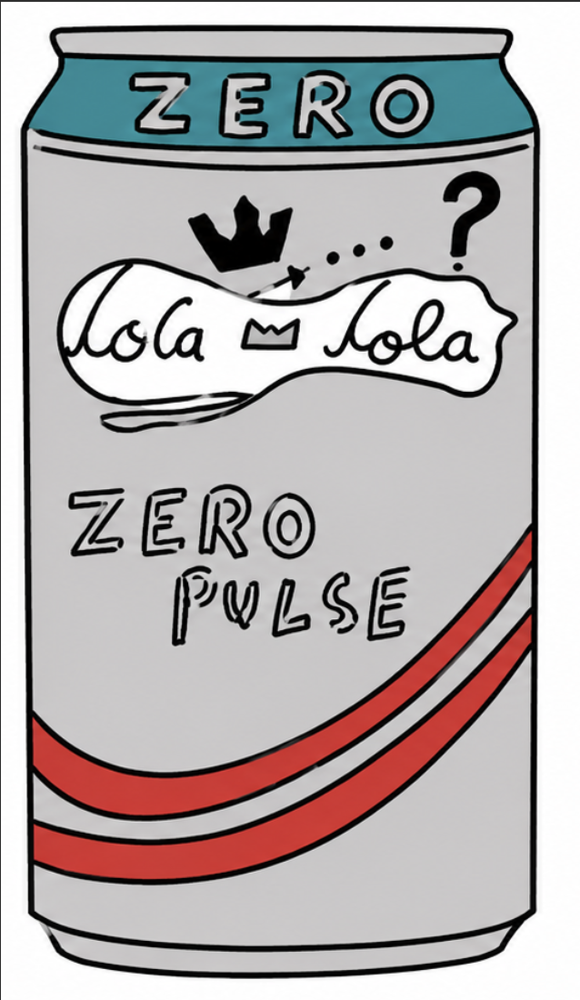
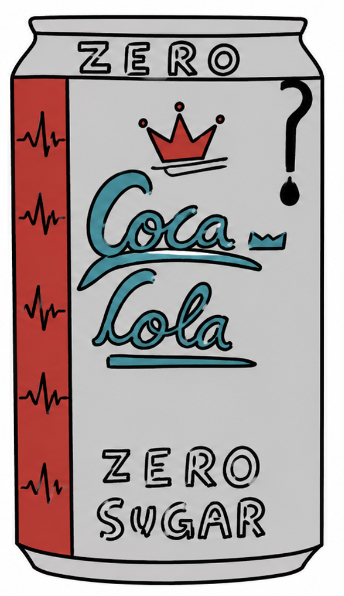
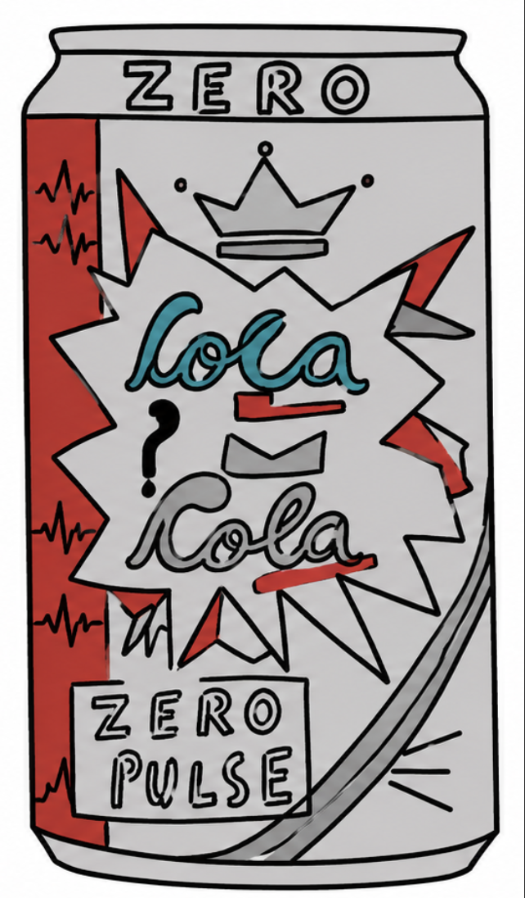
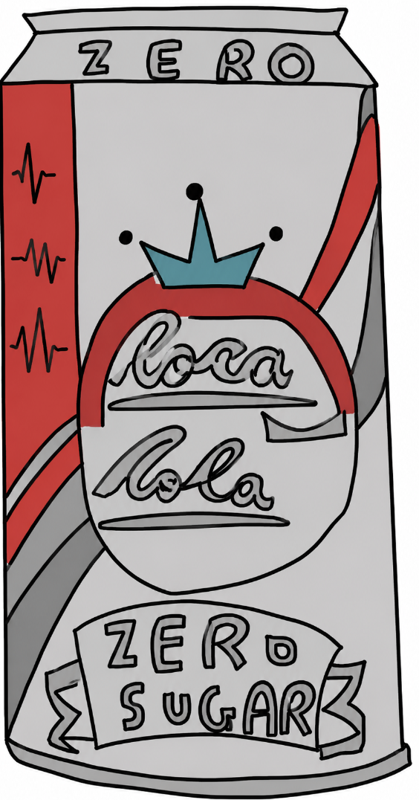

All four design ideas and the final chosen can for the Coca‑Cola Zero rebrand.

This design meets my specifications because it uses a modern, minimal layout with strong colour contrast for visibility. The way everything is written is bold and readable, and the red stripe adds energy to match the “Pulse” theme, supporting the goal of health. The design appeals to the target audience (teens/young adults) through its sporty, premium look. The arrangement of information is clear, and the overall theme supports the rebranding goal of creating a fresh, dynamic identity
Design 1 meets several of the required specifications clearly.
It appeals to young adults because the bold colours, curved shapes and energetic stripe create a sporty, modern look. It also resembles the Coca‑Cola identity through the script‑style logo and familiar red‑white palette. The design improves the company’s image by appearing fresh and minimal, and it communicates a healthier lifestyle through its clean spacing and simple layout. It is also easy to understand at a glance. However, the “Zero Sugar” message is not strongly emphasised, and the updated logo does not fully match the new identity, so these two specifications are not met.
Total points: 5. because this design has only met 5 out of the 7 designs.

This design meets my specifications because it uses strong colour contrast, clear layout, and energetic imagery to communicate a modern, zero‑sugar identity. The heartbeat line and red stripe make the design dynamic, while the crown and bold typography give it a premium, sporty feel.
Design 2 meets some of the required specifications but misses several key areas.
It appeals to young adults through its bold red stripe and energetic visual movement, which creates a lively and modern feel. The silver background supports the “Zero Sugar” concept by giving the can a lighter, cleaner appearance. However, the logo does not resemble the original Coca‑Cola identity because the blue script and crown move too far away from the brand’s recognisable style. The design does not clearly improve the company’s image, and it does not strongly communicate a healthy lifestyle. It is simple to understand, but not fully aligned with the updated identity.
Total points : 3 . because of the design specification were met out of 7

This design meets my specifications because it clearly shows the “Pulse” theme using the explosion. The layout is easy to read, with the brand name in the centre and the variant at the bottom. The colours create strong contrast, and the crown adds a premium look. Overall, the design is bold, energetic, and suitable for my target audience.
Design 3 meets some specifications but fails to align with several key requirements.
It appeals to young adults through its bold colours, pop‑art shading and energetic layout, which create a lively and eye‑catching style. The “Zero Sugar” message is present, but it is not clearly emphasised, so it does not fully meet that specification. The design does not resemble the original Coca‑Cola identity because the blue logo, crown symbol and starburst background move too far away from the brand’s recognisable style. It does not strongly improve the company’s image or communicate a healthy lifestyle. However, the layout is simple enough to understand at a glance.
Total points 2. because 2 out of 7 design specifications were met.

This design meets my specifications because the diagonal wave and circular logo create a modern, dynamic look that fits the “Pulse” theme. The colours are bold and high‑contrast, making the brand name easy to see. The crown in the circle adds a premium feel, and the curved “ZERO PULSE” banner gives the variant a clear identity. Overall, the layout is clean, energetic, and suitable for my target audience. Relative to the other designs, this design is more not overcrowded, making it a bit more ebay to understand.
Design 4 meets most of the required specifications clearly.
It appeals strongly to young adults through its bold red colour, diagonal wave, and confident layout that create a dynamic, premium look. The “Zero Sugar” message is easy to recognise, so that specification is met. The logo closely resembles the original Coca‑Cola identity with its curved script and red‑silver palette, improving brand recognition. The design enhances the company’s image by appearing modern and professional, and it communicates a healthy lifestyle through the silver tone and clean finish. It is simple to understand at a glance, though the updated logo could align slightly better with the new identity.
Total score: 6, because 6 out of 7 design specifications were met.